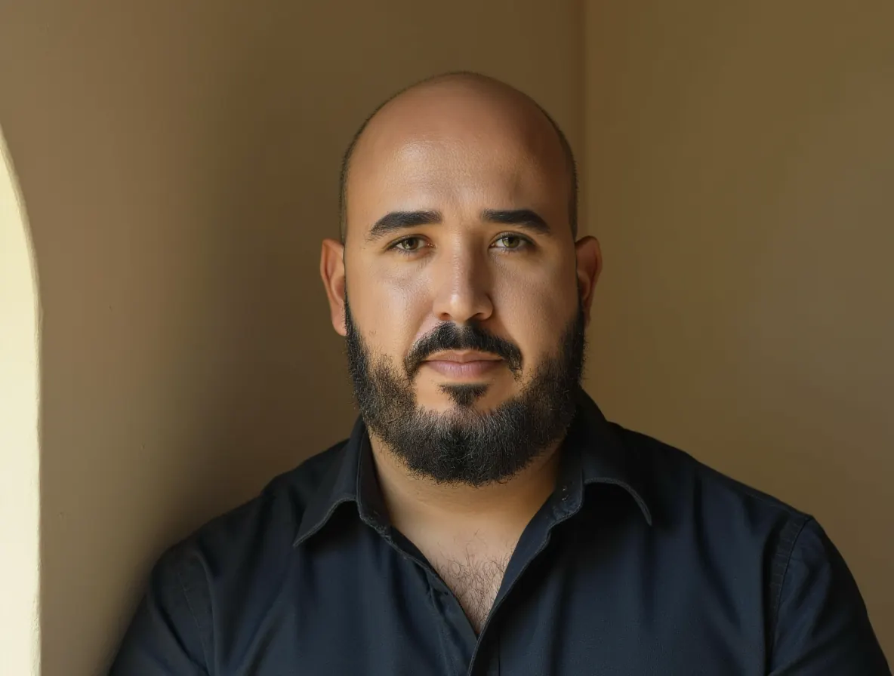

Nitai Morais
16 anos no Grupo Vale, entre a Vale e a VLI, no comercial, no planejamento de terminais integrados a ferrovia e porto e na gestão da operação. Base em Minas Gerais.

No tamanho em que a cadeia acontece
Por escopo, não por cargo
Consultoria em logística e operações
Logística de granéis, viabilidade e verificação para quem compra, vende ou investe, e diagnóstico operacional para a indústria. Pela NP Consultoria e Serviços.
Minério e siderurgia
Gestão de planejamento, processos, manutenção e operação dos terminais de Santa Luzia e Ouro Preto, em Minas, com até dez produtos de minério segregados e parada geral planejada sem perder produção. Gerente interino por oito meses.
Planejamento de terminais de grãos e fertilizantes
Planejamento de longo, médio e curto prazo dos terminais de Araguari e Pirapora: dimensionamento, defesa de orçamento, investimentos e custos, e novos negócios com a capacidade ociosa e a sazonalidade de cada operação. Implantação do TPS com a TSSC e o primeiro modelo de EBITDA por unidade operacional da empresa. Gerente interino por seis meses.
Cadeia de fertilizantes e recuperação de terminal
Planejamento da cadeia do porto de Tubarão, pelas ferrovias EFVM e FCA, até o terminal e o cliente. Recuperação do terminal de grãos de Pirapora até a primeira certificação permanente do Ministério da Agricultura.
Comercial
Atendimento a siderúrgicas e distribuidoras de combustíveis em Belo Horizonte, São Luís e Ouro Branco, incluindo a carteira de gusa e a primeira cobrança de estadia de vagões a um grande cliente. Tricampeão do ranking de atendimento ao cliente.
Clientes que atendi
Em 16 anos de Vale e VLI, nas cadeias de minério, grãos, fertilizantes e combustíveis.


TPS com a própria Toyota
Implantei o Toyota Production System com consultoria direta da TSSC, o centro da Toyota que leva o método a empresas fora do Japão. O terminal virou a escola de TPS da VLI, com imersões de um mês para profissionais da empresa inteira.
- MBA em Logística e Supply Chain Management, FGV (em andamento)
- Pós-graduação em Engenharia Multimodal, PUC Minas
- Escola de Liderança VLI, Fundação Dom Cabral
- Negociação Estratégica e Gestão de Conflitos, Ibmec
- Administração de Empresas, FUMEC
Vamos conversar?
Pelo WhatsApp ou por e-mail. Se for indicação, me diga de quem.